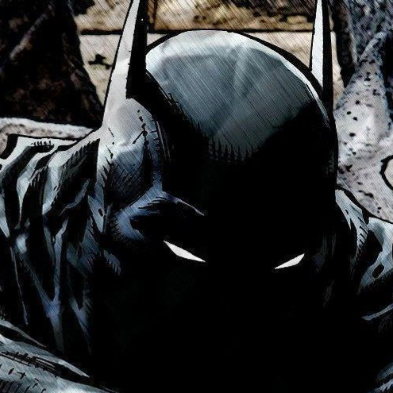

Batman (lit. "Homem-morcego")[1] é uma personagem fictícia e super-herói da editora norte-americana DC Comics, criado pelo escritor Bill Finger a partir dos esboços do desenhista Bob Kane, aparecendo pela primeira vez na revista Detective Comics #27 (maio de 1939) com o nome "Bat-Man"

A identidade secreta do Batman é Bruce Wayne, um bilionário americano, playboy, magnata de negócios, filantropo e dono da corporação Wayne Enterprises. Depois de testemunhar o assassinato dos seus pais enquanto criança, Wayne jurou vingança com um ideal de justiça contra os criminosos. Wayne, então, treina física e intelectualmente e cria uma persona inspirada no morcego para combater o crime.[2] Batman opera na cidade fictícia Gotham, sendo ajudado por seu mordomo Alfred Pennyworth, o comissário de polícia Jim Gordon e diversos aliados vigilantes, sendo Robin seu parceiro mais recorrente. Ao contrário da maioria dos super-heróis, Batman não tem superpoderes; assim, na sua guerra contra o crime, utiliza seu intelecto de gênio, sua perícia em artes marciais e sua destreza física — bem como sua riqueza, que lhe garante um arsenal de última geração. Uma grande variedade de vilões compõe a galeria de inimigos do Batman, incluindo o Coringa, seu nêmesis.
Batman tornou-se popular assim que foi apresentado, acabando por ganhar a sua própria história em quadrinhos em 1940. Enquanto as décadas progrediram, foram surgindo divergências sobre a interpretação do personagem. No final dos anos de 1960, a série de televisão Batman usava uma estética camp, que continuou a ser associada ao personagem muitos anos após o fim da série. Vários criadores trabalharam no sentido de devolver o personagem às suas raízes sombrias, culminando com The Dark Knight Returns (1986), de Frank Miller, seguido por Batman: The Killing Joke (1988), de Alan Moore, e Arkham Asylum: A Serious House on Serious Earth (1989), de Grant Morrison. Apesar dessa decisão radical, o sucesso cinematográfico Batman da Warner Bros. ajudou a manter o interesse do público no personagem.
filmes
1. Batman: o filme (1966)
2. Batman (1989)
3. Batman Returns (1992)
4. Batman Forever (1995)
5. Batman e Robin (1997)
6. Batman Begins (2005)
7. The Dark Knight (2008)
8. The Dark Knight Rises (2012)
9. Batman v Superman: Dawn of Justice (2016)
10. Esquadrão Suicida (2016)
11. Liga da Justiça (2017 - Versão Joss Whedon)
12. Liga da Justiça (2021 - Versão Zack Snyder)
13. Coringa (2019)
14. The Batman (2022)
A DC apresentou Batman em muitas histórias em quadrinhos, incluindo histórias em quadrinhos publicadas sob seus selos, como Vertigo e Black Label. A revista em quadrinhos do Batman mais antiga, Detective Comics, é a revista em quadrinhos mais antiga dos Estados Unidos. Batman é frequentemente retratado ao lado de outros super-heróis da DC, como Superman e Mulher Maravilha, sendo membro de equipes como a Liga da Justiça e os Renegados. Além de Bruce Wayne, outros personagens assumiram a personalidade do Batman em diferentes ocasiões: Azrael, no arco de história Knightfall de 1993–1994; Dick Grayson, o primeiro Robin, entre 2009 e 2011; e Jace Fox, filho de Lucius Fox, aliado de Wayne, a partir de 2021.[4] A DC também publicou quadrinhos apresentando versões alternativas do Batman, incluindo a encarnação vista em The Dark Knight Returns e seus sucessores, a encarnação do evento Flashpoint (2011) e inúmeras interpretações do selo Elseworlds.
Como um ícone cultural, Batman já foi licenciado e adaptado para uma grande variedade de mídias, desde o rádio e a televisão ao cinema e os videogames. O personagem tem motivado os psiquiatras a tentarem entender a sua psique conflituosa. Em maio de 2011, o IGN colocou Batman em #2, atrás do Superman, no Top 100 dos "Melhores Heróis de Todos os Tempos das Histórias em Quadrinhos",[5] tal como a revista Empire na sua lista dos "50 Melhores Personagens dos Quadrinhos".[6] Batman já foi interpretado tanto no cinema como na televisão por Lewis Wilson, Robert Lowery, Adam West, Kevin Conroy, Michael Keaton, Val Kilmer, George Clooney, Christian Bale, Ben Affleck e Robert Pattinson.